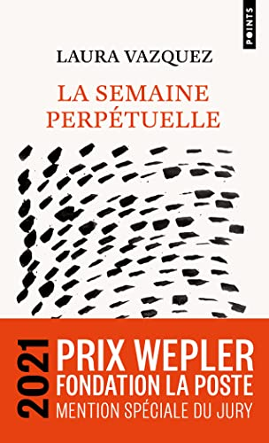
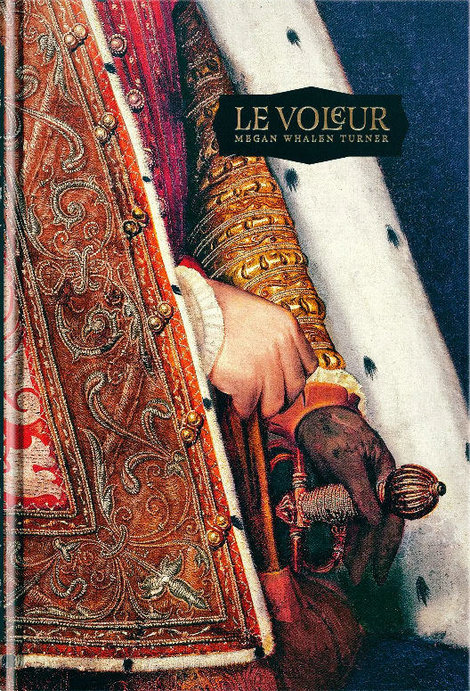

Pas facile d’écrire un mot sur La semaine perpétuelle car je n’avais jamais rien lu de pareil, je manque de points de comparaison. C’est bien un roman, mais c’est aussi de poésie en prose. Au-delà des monologues intérieurs et des réflexions dont sortent parfois des fulgurances sublimes, il y a une histoire et des personnages : un père obsédé par la propreté, une mère disparue, une grand-mère aux portes de la mort, un frère et une sœur dont Internet et ses réseaux sont des sortes d’extensions naturelles. L’écriture de Laura Vazquez est une des plus étranges et exigeantes que j’ai jamais vues, et pourtant ce n’est jamais ni verbeux ni prétentieux. C’est même plutôt fluide et je n’ose imaginer le boulot qu’il a fallu pour obtenir ce résultat. Alors bon, je n’ai pas tout compris, mais c’est un livre très singulier et difficile à lâcher.
Sortie : 2021

Initialement paru en 1996 mais édité en français l’an dernier par la maison d’édition Monsieur Toussaint Louverture (de fort jolie manière : c’est un bel objet), Le Voleur est le premier tome de la série de fantasy Le Voleur de la Reine, plutôt destinée à un jeune public. J’ai été attiré par les promesses d’intrigues politiques et d’un univers inspiré du monde byzantin, mais j’en sors un peu perplexe. D’accord, la personnalité du protagoniste (Gen, un voleur très doué sorti de prison par un conseiller du roi pour l’aider à récupérer un artefact) est intéressante. L’histoire, par contre, ne m’a pas emballé. Elle est grosso modo découpée en deux parties : une phase de voyage pas franchement palpitante et qui semble bien longue, puis une phase de résolution plus courte qui (heureusement) secoue le récit. Il paraît que la saga écrite par l’Américaine Megan Whalen Turner est super et qu’il faut donner une chance à la suite, mais je ne déborde pas d’enthousiasme.
Titre original : The Thief / Sortie originale (anglais) : 1996 / Version française : 2025 (traduction : Yoko Lacour)